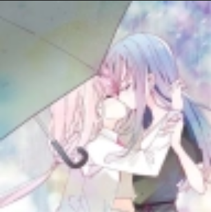
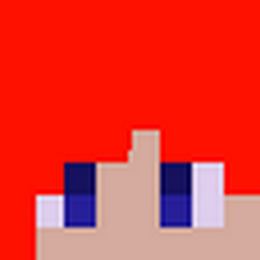
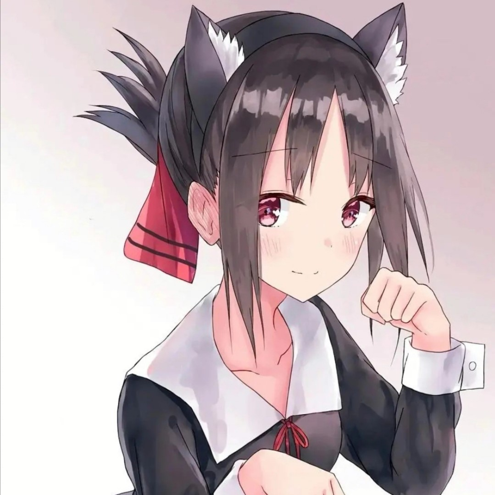
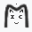
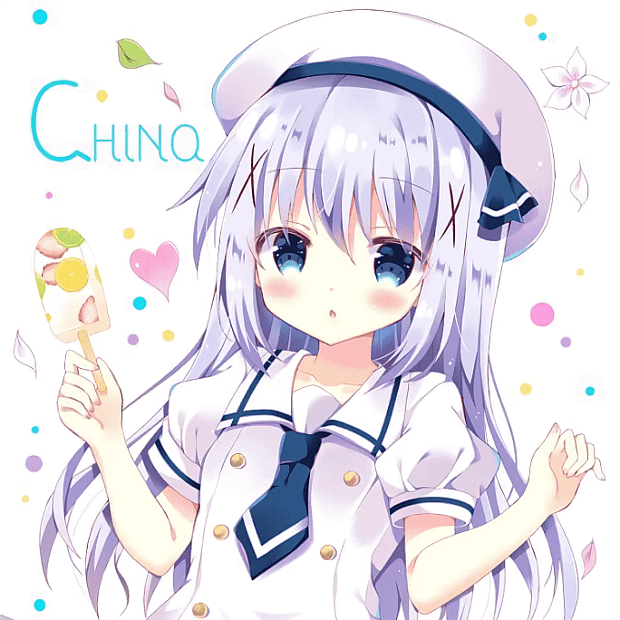
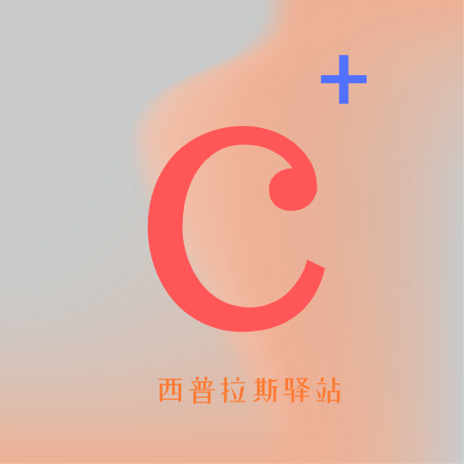
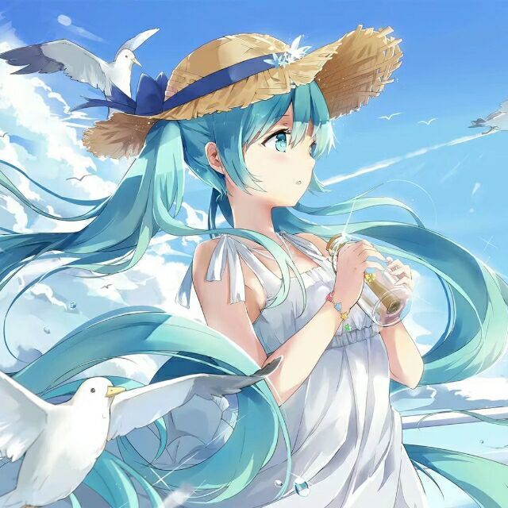

My Friends
一路同行的人。

清水博客 巨佬Sora，百合厨一枚 闲鱼（思乐冰） 咸鱼，专职程序员 & 业余游戏制作人
LiarOnce的小站 技术宅+死宅一枚 C Crj0b's Blog 深谙所有做坏事的套路,却能努力控制绕道而行。
Diego’s Blog 一枚OI蒟蒻的博客
Quantum Cat QQ鲨冰的杂物间 QQ floating ice A personal blog Kaios资源下载站 这里有丰富的Kaios资源 沐 沐云湘夕 准作家的博客小站 P Parksi 半真半假，半信半疑。
CHINQ 弗拉基米尔♂伊里奇♂列宁
西普拉斯驿站 A forum with something meaningful KaiOS Lab QQ老冰的小站
さくら荘後の花園 永远相信美好的事情即将发生 SoSilent 在编程的海洋中努力前行 K KZero’s Blog Accumulation record想交换友链？看看申请要求。